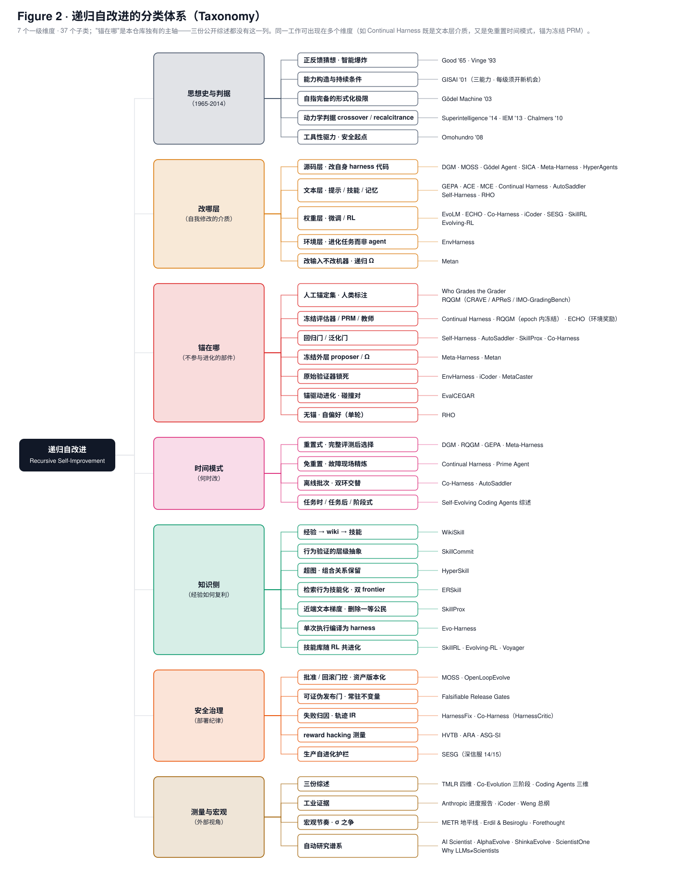

长文阅读
分类框架

图 2：本仓库使用的分类，七个一级维度、37 个子类。"锚在哪"（进化循环之外的固定评估依据是什么）是本仓库增加的维度，三份已发表综述都没有按它分类。两图由 scripts/make_figures.py 生成，深色版用于 PPT。
§4 按五个方向分类核心论文（框架侧、评估侧、模型侧、知识侧、在线侧），另设 harness 工程、自动研究、安全治理三节收录 2026 年的新工作，并用起源、桥接、综述、程序进化谱系、宏观测量五节补充背景。

图 2：本仓库使用的分类，七个一级维度、37 个子类。"锚在哪"（进化循环之外的固定评估依据是什么）是本仓库增加的维度，三份已发表综述都没有按它分类。两图由 scripts/make_figures.py 生成，深色版用于 PPT。
§4 按五个方向分类核心论文（框架侧、评估侧、模型侧、知识侧、在线侧），另设 harness 工程、自动研究、安全治理三节收录 2026 年的新工作，并用起源、桥接、综述、程序进化谱系、宏观测量五节补充背景。